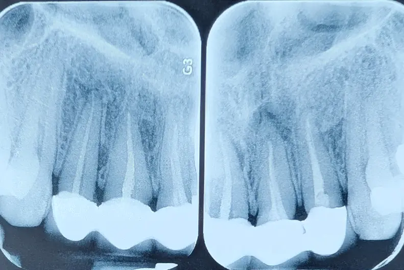
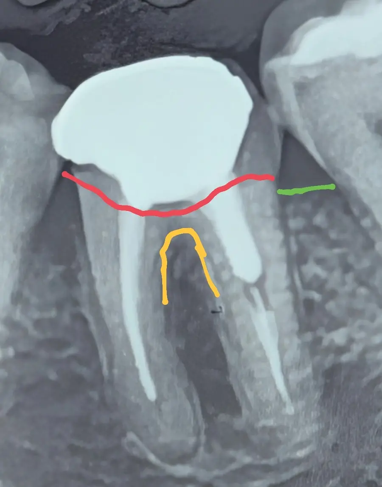

نسخه استخراجشده؛ ترجمه یا تأیید علمی انجام نشده است. وضعیت: captured
بیمار برای تعویض چهار روکش بههممتصل آمده است. ظاهر کار یکپارچه است. پیش از اینکه روکشی را برداری، دربارهی نگهداشتن دندانها چه قولی به بیمار میدهی؟

هیچ قول قطعی. تا روکش برداشته نشود، وضعیت واقعی دندان، یعنی حجم تاج، پوسیدگی و ترک، معلوم نیست. رادیوگرافی هم فقط بخشی از حقیقت را نشان میدهد. این قانون همیشگی تعویض روکش است: ارزیابی واقعی وقتی شروع میشود که دندان برهنه جلوی چشمت باشد.
در روکشهای اسپلینتشده این عدمقطعیت چند برابر میشود. کسی که دندانها را بیدلیل اسپلینت میکند، به احتمال زیاد دندان Hopeless (غیرقابل نگهداری) را هم به همسایههای سالم بسته تا کار «نگه دارد». چنین دندانی میتواند سالها فقط با همین اتصال سرپا بماند؛ پس هر واحد را جداگانه و با تردید نگاه کن.
از همان ابتدا به بیمار بگو: «روکش را برمیدارم تا ببینم زیرش چه خبر است؛ ممکن است دندانی قابل نگهداری نباشد.» این جمله پیش از برداشتن روکش، صداقت و آمادگی است؛ همین جمله بعد از برداشتن، بهانه به نظر میرسد.
مولر پایین چپ با تخریب گستردهی ساختار و مشکلات درمان ریشه. بیمار ساکن خارج از کشور است. چرا این دندان را نمیشود بهطور دائمی بازسازی کرد؟

طرح درمان منطقی: کشیدن و ایمپلنت؛ قابل پیشبینیترین نتیجهی فانکشنال، بدون مشکلات فورکا و BW، و کمریسکترین انتخاب برای این بیمار. تشخیص درست یعنی بفهمی کدام مشکل سرنوشت دندان را تعیین میکند.